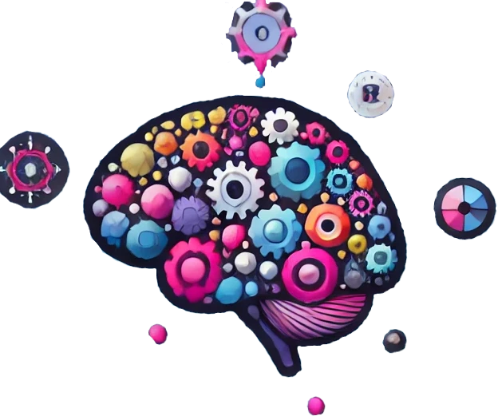

Compêndio de vieses cognitivos
ATENÇÃO: PÁGINA EM CONSTRUÇÃO
Uma visão detalhada e exemplificativa de todas falhas lógico-cognitivas da psique humana.

Introdução ao códex
Este códex agrupa os mais diversos viéses humanos em categorias adjetivas. Os humanos são seres de uma espécie que evoluiu a contragosto do principal mecanismo adaptativo, que é a eliminação de características fracas para o ambiente e reforço das fortes. Somos movidos por generalizações de características, formas abstratas de agir, estratagemas gerais e heurísticas complexas adaptáveis a diversas situações e, por isso, os homens conquistaram o planeta.
Humanos se orientam mal
O problema XY
Buscar soluções para problemas sintomáticos não resolve causa basal.
O usuário de um serviço qualquer encontra uma dificuldade por ter o serviço X prestado de forma incorreta, levando ao surgimento do sintoma Y. Quando entra em contato com suporte técnico, solicita orientações para corrigir Y e nunca consegue se livrar do problema original X.
A memória humana não é confiável
Efeito de espaçamento
Em breve.
Sugestividade
Em breve.
Falsa lembrança
Em breve.
Criptomnésia
Por esquecimento, uma ideia velha parece nova.
Jamais vu
Algo familiar parece totalmente desconhecido.
Déjà vu
Algo desconhecido parece familiar.
Confusão sobre a fonte
Em breve.
Erro de atribuição de origem
Em breve.
Efeito Gell-Mann
Excessiva confiança em fontes sabidamente comprometidas.
Veja meu artigo sobre o efeito Gell-Mann.
A racionalidade humana prefere a simplicidade e completude
Efeito menos é melhor
Em breve.
Navalha de Ockam
A explicação mais simples é provavelmente a mais correta.
Eu discordo deste viés, veja aqui.
Erro de conjunção
Em breve.
Efeito Delmore
O cérebro humano superestima os objetivos imediatos e subestima os objetivos de longo prazo.
O maratonista que busca como meta “ser melhor ano que vem” tem desempenho pior que aquele que se compromete a melhorar o tempo da corrida em X segundos a cada treino.
Lei de Parkinson e a gestão do tempo
As demandas se expandem para consumir todo o recurso.
Originalmente formulado como “o trabalho se expande para preencher todo tempo disponível para realização”. Pode ser entendido como uma pseudo lei natural das coisas, uma observação filosófica. Quando investigado a fundo, lembra o provérbio antigo “Deus dá o frio conforme o cobertor”.
Efeito abrigo de bicicleta (lei da trivialidade)
A futilidade é mais debatível que a sofisticação.
Para construção de um reator nuclear poucos podem opinar e, portanto, a deliberação se torna objetiva. Para a construção de um abrigo de bicicletas qualquer um pode opinar e, por consequência, as discussões serão intermináveis.
Efeito rima portanto é bom
Em breve.
Viés de crença
Em breve.
Víes de informação
Em breve.
Viés de ambiguidade
Em breve.
Viés de confusão das variáveis
Duas variáveis no mesmo contexto têm sua relação interpretada de forma errada.
Durante o verão, o consumo de sorvetes e uso de piscinas aumentam por causa do calor. O observador desavisado tende a criar uma relação errada entre estas variáveis, afirmando que o consumo de sorvete aumenta os afogamentos, por exemplo.
A psique humana tende a preservar o status atual
Em breve.
Viés do status quo
Em breve.
Viés de comparação social
Em breve.
Efeito de domínio
Em breve.
Reatância psicológica
Quando percebemos a persuasão, tendemos a reafirmar nossa opinião ou radicalizar para evitar nos sentirmos coagidos.
Quando um cliente percebe estar sendo persuadido na compra de um produto, tende a rejeitá-lo ou comprar o concorrente, apenas para manter a sensação de liberdade.
Psicologia reversa
Justificação do sistema
Em breve.
Efeito tetris
A mente humana pode adotar um paradigma como padrão, tornando a visão do mundo real distorcida no sentido de um viés padrão.
Um jogador de tetris de longa data tende a enxergar coisas do mundo real como peças de tetris que se encaixam.
A ação humana é direcionada a tarefas já consolidadas
Efeito bumerangue
Em breve.
Efeito de doação
Em breve.
Efeito tratamento da informação difícil
Em breve.
Efeito de pseudo-certeza
Tendemos a eliminar pequenos riscos do que reduzir grandes riscos pelo conforto da pseudo-certeza de termos controle.
Prefere-se o investimento no combate ao terrorismo, um evento raro, do que o mesmo valor ser alocado em educação básica, um item muito mais relevante.
Efeito de disposição
Em breve.
Viés de risco zero
Evitamos o risco a todo custo, muitas vezes perdendo oportunidades de longo prazo com riscos baixos ou moderados.
Viés da unidade
Em breve.
Efeito IKEA
Valorizamos de forma desproporcional o resultado de nosso esforço.
A loja sueca IKEA vendia móveis que os próprios consumidores montavam com preço superior aos já montados, se aproveitando do viés cognitivo dos clientes valorizarem seu próprio trabalho.
Aversão à perda
Em breve.
Efeito de própria geração
Em breve.
Escalada de compromisso
Em breve.
Escalada irracional
Em breve.
Viés de custo irrecuperável
O investimento atual é grande o suficiente para nos mantermos no plano, mesmo que seja um péssimo plano.
Víes mais conhecido como teoria do frânces Jacque: “já que” já estou aqui, continuo! 😂
O raciocínio humano tende ao imediatismo
Efeito da vítima identificável
Os humanos agem em socorro de vítimas específicas e identificáveis em detrimento de grupos indefinidos de vítimas.
O apelo do holocausto é intenso pela histórica identificação de um dos grupos vitimizados, os judeus. Conversivamente, os grupos de africanos vítimas anônimas de diversos regimes agressivos não recebem atenção proporcional.
Este viés humano parece fazer parte de uma estratégia de sobrevivência.
argumentum ad novitatem
Toda novidade recebe indevidos créditos antecipados.
Pensamos que a dieta mais recente provavelmente é mais eficaz, apenas por ser mais nova.
Desconto hiperbólico
Os benefícios imediatos tem maior peso que benefícios mediados e futuros.
Quanto maior a espera de um benefício, menos valor este parece ter diante da expectativa humana. Na verdade, os mamíferos, de forma geral, montam estratégias de benefício limitadas no tempo. Por exemplo, leões, podem esperar por horas para uma emboscada contra uma presa, nunca por dias.
Os humanos buscam vantagem acima da moral
Lei de Gérson
Os seres humanos priorizam a vantagem sobre a moralidade de longo termo, isto é, há um imediatismo no lucro em geral.
No Brasil, a máxima ficou eternizada pelo comercial dos cigarros Vila protagonizando Gérson, futebolista famoso à época:
Por que pagar mais caro se o Vila me dá tudo aquilo que eu quero de um bom cigarro? Gosto de levar vantagem em tudo, certo? Leve vantagem você também, leve Vila Rica!
Ao topo!